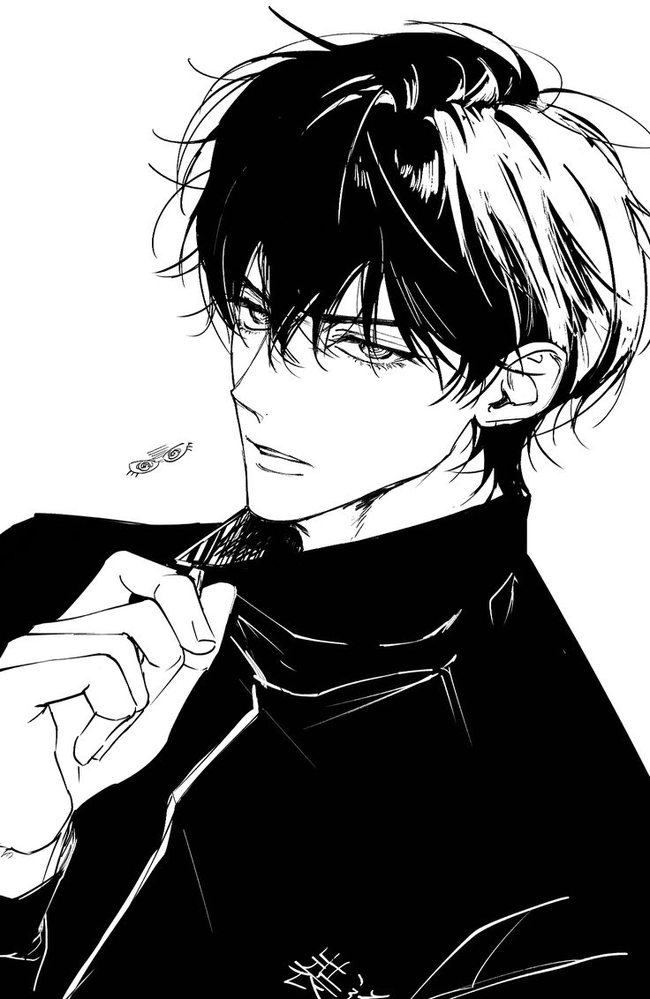

01VISUAL
STORY
STORY
Visual storytelling
Bagi Aku, sebuah gambar bukan cuma kumpulan warna, bentuk, dan garis. Di baliknya bisa ada karakter, suasana, cerita, bahkan pemikiran yang tidak bisa dijelaskan secara langsung.
PORTOFOLIO PERSONAL · 2026
Aku Azre — seorang pelajar yang tertarik pada strategi, matematika, desain visual, dan cara kerja berbagai hal.

YOUR01 / PROFILE
Aku suka membongkar sebuah ide sampai memahami bagaimana bagian-bagiannya bekerja. Dari menyelesaikan persoalan logika hingga merancang visual, setiap proses adalah kesempatan untuk belajar sesuatu yang baru.
Lebih banyak tentangku →02 / SELECTED WORK
Bagi Aku, sebuah gambar bukan cuma kumpulan warna, bentuk, dan garis. Di baliknya bisa ada karakter, suasana, cerita, bahkan pemikiran yang tidak bisa dijelaskan secara langsung.
Aku tidak melihat matematika hanya sebagai kumpulan rumus untuk mendapatkan jawaban. Aku lebih tertarik memahami bagaimana suatu jawaban bisa terbentuk.
Bagi Aku, sebuah ide yang belum terealisasi bukan berarti tidak berguna. Bisa jadi ide tersebut hanya belum menemukan waktu dan bentuk yang tepat./p>
PERSONAL NOTE
“Kesuksesan bukan sesuatu yang dibangun dalam semalam.”— A REMINDER TO KEEP BUILDING